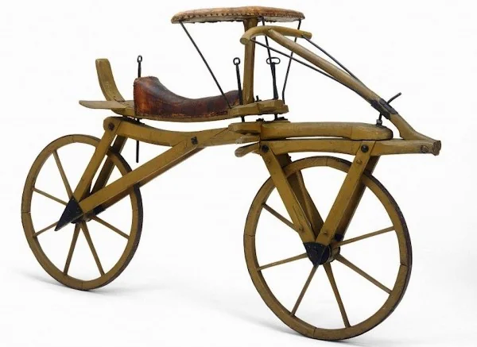
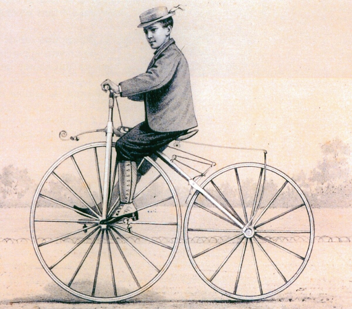
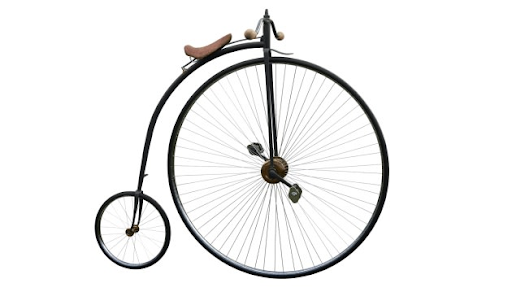
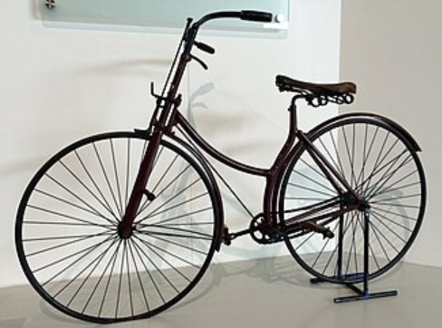
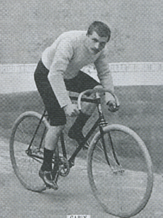
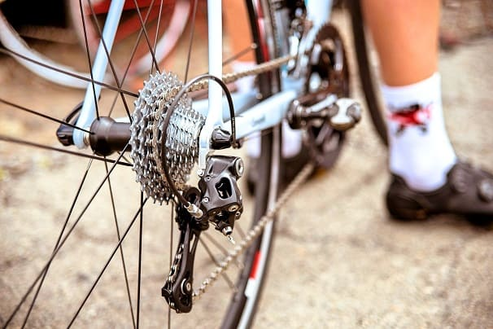
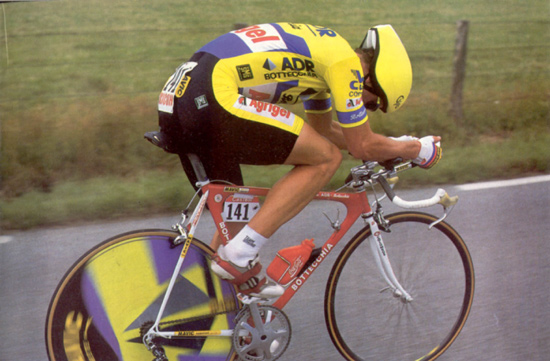
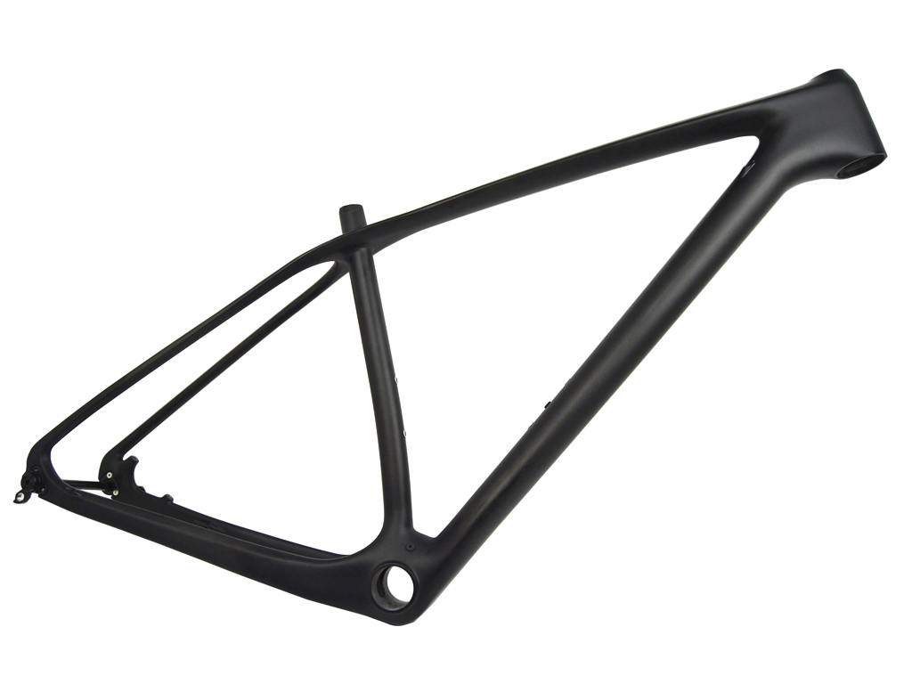
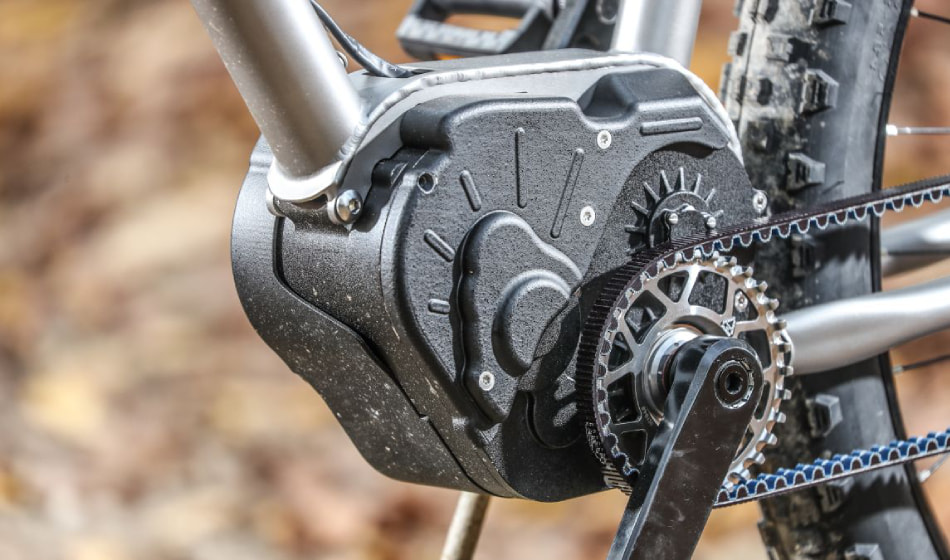
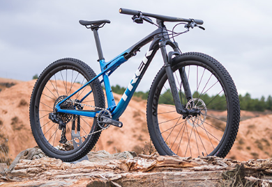

Línea del Tiempo
Desde la draisiana hasta la era del carbono. Navega por los hitos que transformaron el ciclismo.

La Draisiana
Todo empezó sin pedales. El usuario debía impulsarse empujando el suelo con los pies. Karl Drais inventó este precursor de la bicicleta en Alemania.

Llegan los Pedales
Pierre Michaux añadió pedales a la rueda delantera. Conocidas como "Sacudehuesos", fueron el primer paso hacia la bicicleta moderna.

Penny-Farthing
Rueda delantera gigante para ganar velocidad. Muy peligrosas y propensas a caídas espectaculares sobre el manillar.

La Bicicleta de Seguridad
John Kemp Starley definió la forma moderna: dos ruedas iguales y transmisión por cadena. El diseño que cambió todo.

Nace el Tour
Primera edición del Tour de Francia. Bicicletas de acero pesado, sin cambios, y etapas que hoy parecen inhumanas.

Los Cambios de Marcha
El Tour permite por primera vez el uso de desviadores. Los ciclistas ya no tienen que bajarse para cambiar de piñón en las montañas.

Revolución Aerodinámica
Greg LeMond gana el Tour por solo 8 segundos usando manillar de triatlón y casco aerodinámico. La resistencia al viento se vuelve prioridad máxima.

La Era del Carbono
El acero y el aluminio dan paso a la fibra de carbono. Cuadros ultraligeros, rígidos y con formas moldeadas al milímetro.

Cambios Electrónicos
Comienza la era de la electrónica en el pelotón. Cambios de precisión con batería que revolucionan la competición.

Era Moderna
Carbono de alto módulo, cambios electrónicos inalámbricos, aerodinámica extrema y potenciómetros integrados. La cumbre de la ingeniería ciclista.